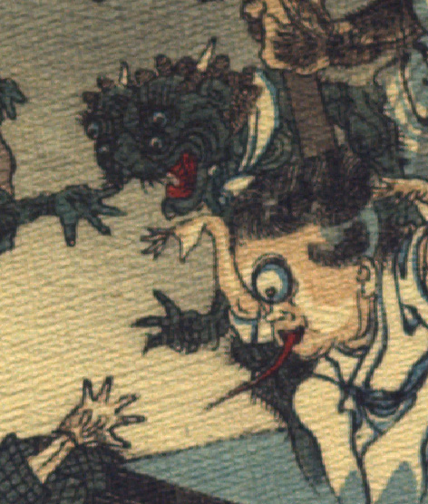

四つ目の鬼。全身が青黒い。獅子を思わせる頭部をしており、髪は巻き毛で、額に2本の角が後ろ向きに生え、そのすぐ下に大きな耳がついている。額の真ん中がわれ、左右に2つずつ丸く青い目玉がつき、鼻は潰れている。威嚇するように、真ん中から裂けた口を大きく開いている。あごは割れている。体は筋肉質で、腕と脚に毛が生えている。手には3本の指が描かれている。
出典：親書誌：U426_nichibunken_0109：Le moineau qui a la langue coupée／日付：2006／資源識別子：U426_nichibunken_0109_0008_0003
Copyright (c)2010- International Research Center for Japanese Studies, Kyoto, Japan. All rights reserved.